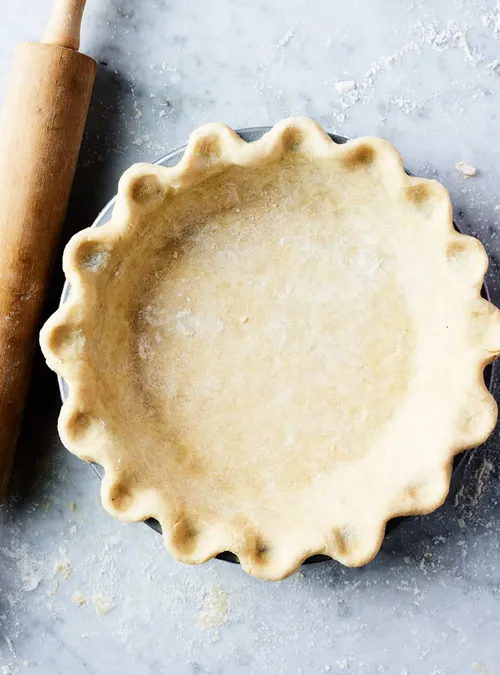
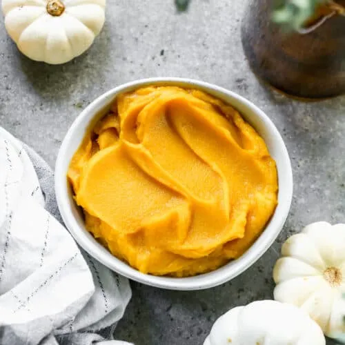
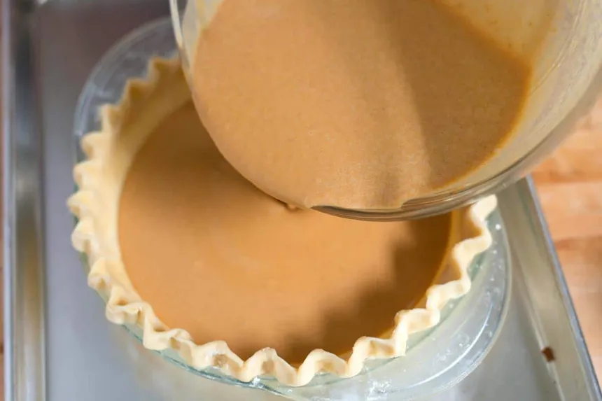
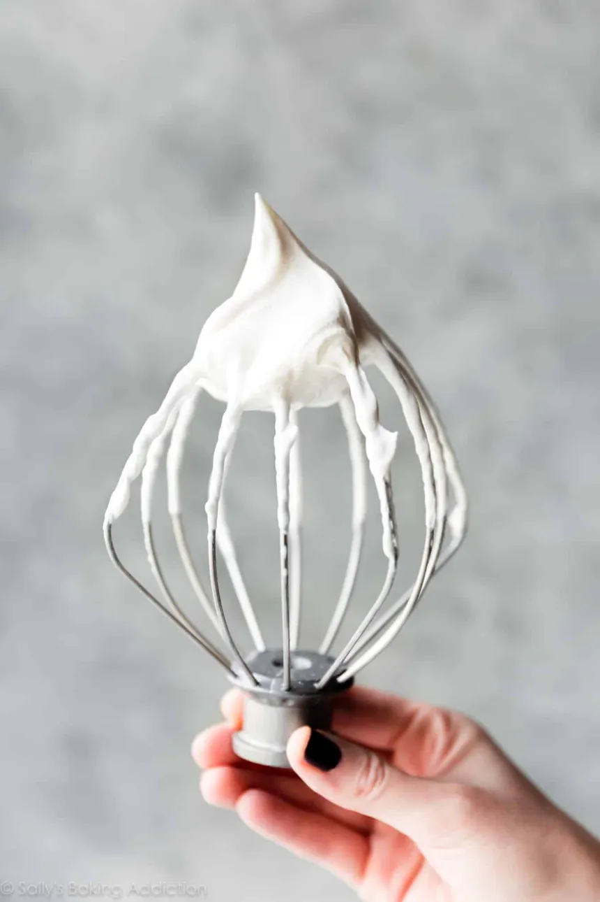
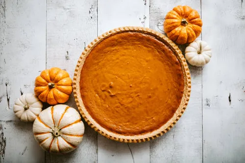

Complete Pumpkin Pie Recipe
How to Make the Crust
Ingredients
- 1 1/2 cups Crisco (vegetable shortening)
- 3 cups all-purpose flour
- 1 whole egg
- 5 tbsp. cold water
- 1 tbsp. white vinegar
- 1 tsp. salt
Directions
- Slowly mix the Flour with the vegetable shortening in a large bowl
- In a smaller bowl, beat the egg with a fork
- Add the egg to the larger bowl
- Add the cold water, white vinegar, and salt then mix until it becomes a dough
- Seperate the dough into thirds or halves depending on how thick you want your crust
- Please note that you could also buy pre-made crust for your pie

How to Make the Purée
Ingredients
Directions
- Cut the small pumpkins in half
- Scoop out as much pulp and seeds as possible
- Place the small pumpkins on a tray
- Bake at 350°F for about 45 minutes
- Once golden brown, peel away the skin from the pumpkins
- Lastly, put chunks of the mush into a food processor or mash them up with a potato masher until purée is smooth

How to Make the Pie Filling
Ingredients
- 15-oz. pumpkin purée
- 1 1/4 c. heavy whipping cream
- 1/2 c. granulated sugar
- 1/4 c. packed light brown sugar
- 2 tsp. pumpkin pie spice
- 1 tsp. vanilla extract
- 1/2 tsp. kosher salt
- 2 large eggs
- 1 large egg yolk
Directions
- Add the purée, cream, and sugars into a bowl and whisk together
- Whisk in the rest until the mix is smooth

How to Make Whipped Cream
Ingredients
- 1 c. heavy whipping cream
- 3 tbsp. sugar
- 1 tsp. vanilla extract
Directions
- Add all of the ingredients into a bowl
- Whisk by hand or with a hand mixer until the cream in thick and stands up on its own

How to Make the Pie
Ingredients
- a 9" pie plate
- pie crust
- pie filling
- whipped cream
Directions
- Start with the pie crust
- Roll it out on a lightly floured surface to be about 13" round
- Then transfer into a 9" pie plate
- Tuck the edges of the crust to be even with the pie plate
- Crimp the edges
- Prick the crust all over with a fork
- Put crust in fridge for an hour
- Preheat the oven to 400˚F
- Once the crust is cooled, take out o fthe fridge
- line the crust with parchment paper
- Fill the pie to the top with baking weights or dried beans
- Bake in the oven for 13 to 15 minutes, until the edges look dry and have a bit of color on them
- Remove the weights and parchment paper
- Place back into the oven for another 4 to 6 minutes until the bottom looks dry and colored too
- Turn the temperature down to 350°F
- Add the pie filling
- Bake for 55 to 60 minutes
- Let it cool completely
- Serve with whipped cream
